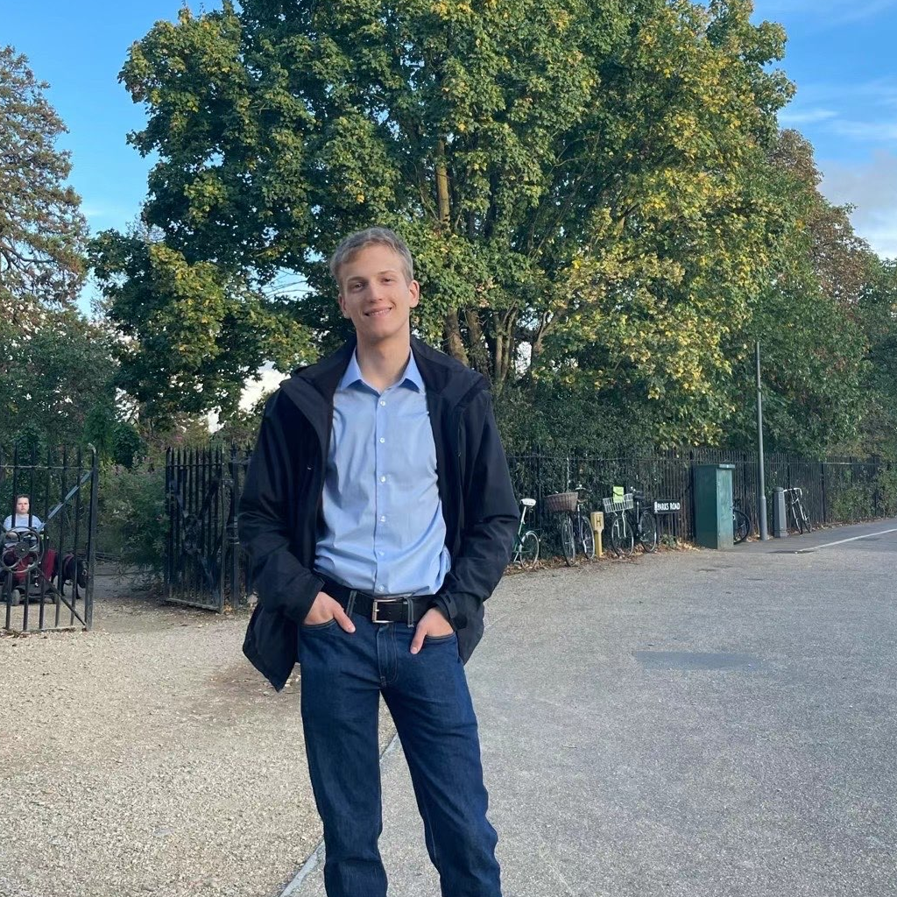

| Simon.Pohmann.2022@live.rhul.ac.uk | |
| Research Interests | Cryptography, Computational Mathematics |
| Current Affiliation | Royal Holloway, University of London |
| Links | ORCID · GitHub · DBLP |

| NPVW27 ia.cr/2026/1872 | L. Nürnberger, S. Pohmann, M. Veroni, C. Weinert. “DNSPIR: Private Information Retrieval Optimized for Privacy-Preserving DNS Lookups”. In: Proceedings on Privacy Enhancing Technologies (PoPETS'27). 2027. |
| P26 royalholloway.ac.uk | S. Pohmann. “An Algebraic Perspective on the BGV and BFV Homomorphic Encryption Schemes”. Doctoral Thesis. Royal Holloway, University of London. 2026. |
| OPP25 ia.cr/2025/864 | H. Okada, R. Player, and S. Pohmann. “Fheanor: a new, modular FHE library for designing and optimising schemes”. In: Cryptology ePrint Archive (2025). |
| OPPW25 ia.cr/2024/1307 | H. Okada, R. Player, S. Pohmann, and C. Weinert. “On algebraic homomorphic encryption and its applications to doubly-efficient PIR”. In: Annual International Conference on the Theory and Applications of Cryptographic Techniques (EUROCRYPT'25). Springer. 2025, pp. 34-64. |
| OPPW24 ia.cr/2023/1510 | H. Okada, R. Player, S. Pohmann, and C. Weinert. “Towards practical doubly-efficient private information retrieval”. In: International Conference on Financial Cryptography and Data Security (FC'24). Springer. 2024, pp. 264-282. |
| OPP23 ia.cr/2023/1304 | H. Okada, R. Player, and S. Pohmann. “Homomorphic polynomial evaluation using Galois structure and applications to BFV bootstrapping”. In: International Conference on the Theory and Application of Cryptology and Information Security (ASIACRYPT'23). Springer. 2023, pp. 69-100. |
| P22 ox.ac.uk | S. Pohmann. “Generating supersingular curves with modular polynomials”. MA thesis. Oxford University. 2022. |
| PSZ21 ia.cr/2021/430 | S. Pohmann, M. Stevens, and J. Zumbrägel. “Lattice enumeration on gpus for fplll”. In: Cryptology ePrint Archive (2021). |
| 2026 01/11 - now | FWO Junior Postdoctoral Fellow at COSIC, KU Leuven. |
| 2026 23/02 - 31/10 | Part-time cryptographic researcher at Fhenix. |
| 2017 - 2019 | Working student at msg systems, Passau, Germany. |
| 2022 - 2026 | PhD in Cryptography as part of the Information Security Group at Royal Holloway, University of London. Supervised by Dr Rachel Player, and advised by Hiroki Okada and Dr Christian Weinert. |
| 2021 - 2022 | M.Sc. in Mathematics and Foundations of Computer Science at Oxford University, UK. Final Grade: Distinction. |
| 2020 - 2021 | M.Sc. in Computational Mathematics at University of Passau, Germany. Discontinued because of above offer from Oxford; Preliminary Grade 1.0. |
| 2018 - 2020 | B.Sc. in Mathematics at University of Passau, Germany. Final Grade: 1.0. |
| 2017 - 2020 | B.Sc. in Computer Science at University of Passau, Germany. Final Grade: 1.0. |
| 08/03/2026 on github | “Fheanor: a new, modular FHE library for designing and optimising schemes”. Poster Presentation at FHE.org 2026. |
| 12/08/2025 on youtu.be | “An introduction to the FHE library Fheanor”. COSIC Seminar at KU Leuven. |
| 25/03/2025 on github | “On algebraic homomorphic encryption and its applications to doubly-efficient PIR”. Poster Presentation at FHE.org 2025. |
| 06/03/2024 on youtu.be | “Towards practical doubly-efficient private information retrieval”. Conference Presentation at Financial Cryptography 2024. |
| 06/12/2023 | “Homomorphic polynomial evaluation using Galois structure and applications to BFV bootstrapping”. Conference Presentation at ASIACRYPT 2023. |
| 05/10/2023 on fhe.org | “Homomorphic polynomial evaluation using Galois structure and applications to BFV bootstrapping”. FHE.org meetup. |
| 2025 28/07 - 01/08 | Research visit to the COSIC group at KU Leuven. The primary contact was Frederik Vercauteren. |
| 2025 01/04 - 28/06 | Invited Researcher hosted by KDDI Research, supported by the International Exchange Program of the National Institute of Information and Communications (NICT). The primary contact was Hiroki Okada. |
| 2023 - 2025 | Teaching Assistant for Applications of Cryptography. This includes marking coursework, supervising the Lab sessions and holding a guest lecture. |